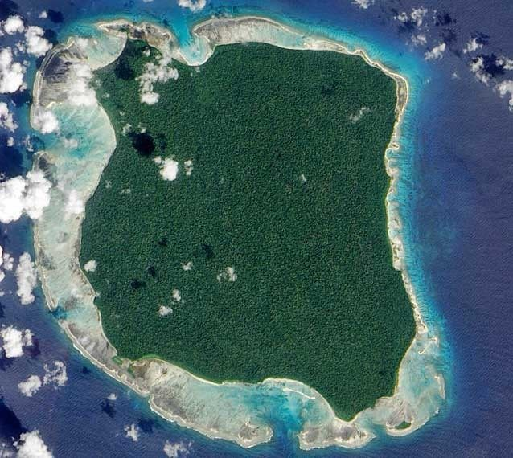

ISLA SENTINEL DEL NORTE, INDIA
Gracias a las imágenes de satélite y a los viajes en avión quedan pocos sitios en el mundo que no se conozcan. Esta isla, situada en la bahía de Bengal, podríamos decir que es casi desconocida. Cubierta por un denso bosque, este miembro de las islas Adaman es habitada por un pequeño grupo de personas que evitan el contacto con el mundo exterior. La tribu isleña vive un estilo de vida de subsistencia. Debido al tupido follaje, es imposible verles desde el aire. A través de los años ha habido varios intentos de contactar con ellos pero suelen tirar piedras y disparar flechas a los helicópteros y barcos que se acercan demasiado a la isla. Hace unos años, dos pescadores indios fueron asesinados por esta tribu cuando se encontraban cerca de la costa.
